1/48 Scale Beechcraft G17S Staggerwing
Images, model and text copyright � 2003 by Matt Swan
����� This kit is a little diversion that I took last winter. This is the 1/48 scale ESCI/Ertl Beechcraft G17S Staggerwing. This is a very old kit and about the only place you will find it these days is on Ebay. That happens to be where I found this one.
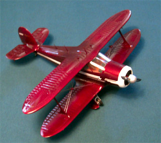
The plastic is a fairly brittle white injection mold with a brief set of decals and a single fold page of instructions. The clear parts are actually clear but the front windshield of mine is broken in half. There is no going back to the manufacturer on this one, I�ll tell you that for nothing. Since I will be building a civilian aircraft I feel like I have a pretty good artistic license with the kit.
����� Construction is fairly straight forward beginning with the interior. I used Testors Tan, Wood and Rust to replicate the various woods and leather accoutrements. All the clear pieces were going to able to be installed after the model was complete which made life a lot easier. The interior is not excessively detailed with a dashboard featuring raised instrument faces, a single control yoke and a pair of seats. The engine was detailed and installed. Once the fuselage had been completed and the seams dressed up I installed the wings and tail surfaces. While these parts were drying I did a little internet research and learned that this was one of the first true corporate transport planes and was also one of the few biplanes to feature retractable landing gear. I also discovered that while there should be several antennae and intakes on the top of the plane, the kit did not include any of them. I also discovered that this aircraft featured dual rigging lines between the wings and once again none of this was mentioned in the kit instructions. Oh well, this is what modeling is all about, isn�t it?
����� First thing that I�m going to deal with is the lack of antennae. This is taken care of quite simply with some thin Evergreen sheet cut to the correct dimensions and the resulting parts attached with Tenex 7R.
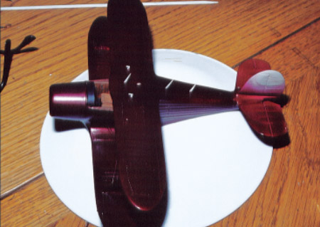 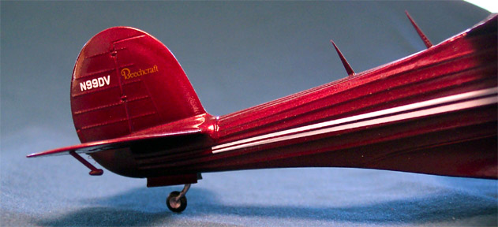 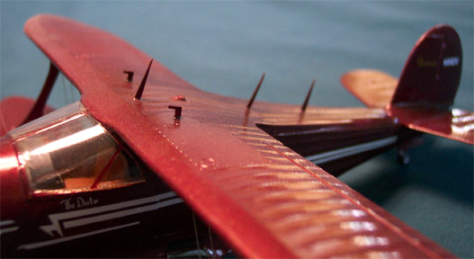
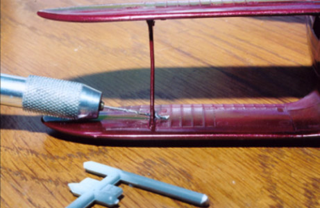
����� After the interior was stuffed with tissue paper and the front windshield area was covered with masking tape I painted the entire craft with Model Master Metallic Stop Light Red. You sure don�t get to use a lot of this color doing military models. The gear bays were done with a brush and the landing gear were installed. The next thing to deal with is the rigging.
I have done very little rigging so this is all experimental. I don�t want dots of glue all over the place holding down lines so I decide to drill each strut and thread invisible thread through the holes. Then the superglue that holds the line in place also acts as the putty to fill the hole. One fly in the ointment though, there are alignment/tensioning stud thingies (Javelin Struts) in the center of all the rigging. How to do this? I took a piece of sprue, rounded one end off with a razor knife then cross drilled it. Next I cut it from the sprue and rounded off the other end. This is then threaded into the rigging. Once all the threads are loosely in place I pull the lose end and everything snugs up and the Javelin Struts aligned themselves. Pretty cool! The glue points all need a little paint touch-up and then everything looks great. Well after the kit was finished I found out that I should have drilled through the wing rather than the struts but it's too late now.
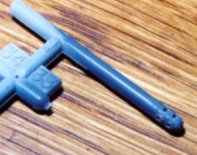 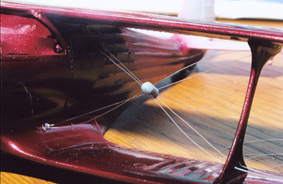 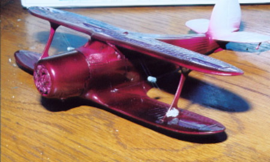
����� The invisible thread is painted with Testors silver and the tensioning studs are done with the Metallic Stop Light Red. Now the Futured clear parts are installed. The break in the windshield is lined with a thin bead of Testors Clear Parts cement but it seems pretty much impossible to hide the break completely � can you see it? The decals are applied and need several applications of Micro-Sol and some judicious slicing with a razor to get them to lie down properly.
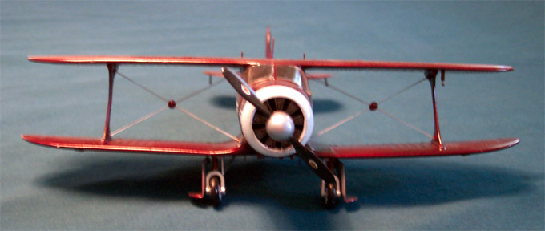
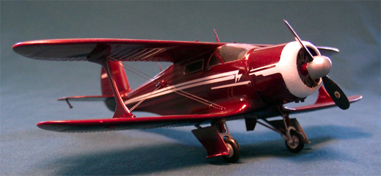
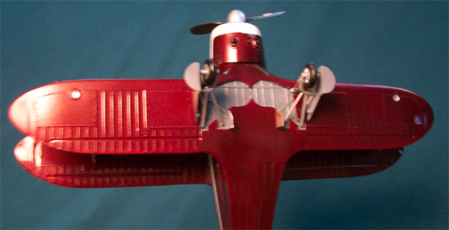